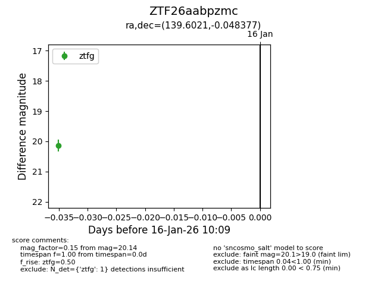
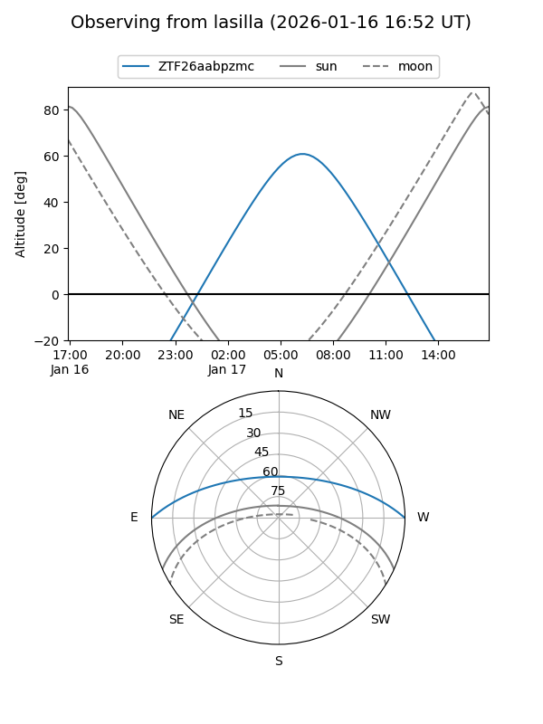
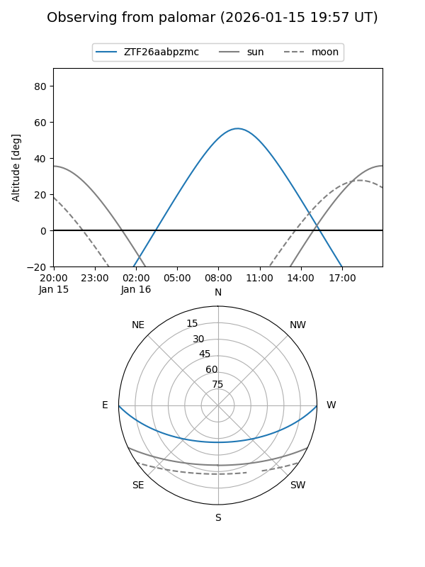

ZTF26aabpzmc
Target ZTF26aabpzmc at 2026-01-16 10:10
Aliases and brokers:
FINK: link
Lasair: link
ALeRCE: link
alt names
ZTF26aabpzmc (ztf,fink_ztf)
Coordinates:
equatorial (ra, dec) = 139.6021,-0.04838
equatorial (HMS+DMS) = 09:18:24.49,-00:02:54.16
galactic (l, b) = (231.7790,+32.14232)
Flags:
Photometry:
last ztfg=20.14
1 ztfg detections
Lightcurve

Visibility


Additional plots